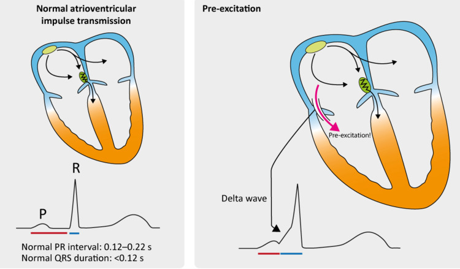

1系統性判讀法：固定順序，不遺漏
臨床上判讀心電圖最怕的不是「看不懂」，而是「看漏」——花很多時間確認一個明顯異常，卻漏掉旁邊另一個線索。解法是每次都用固定的順序檢查，不管臨床情境多緊急都照著走一遍：
- 描記品質與定標：走紙速度、定標是否標準（第1章），有沒有明顯的雜訊或導程接反。
- 心率：規則用300法則/1500法則，不規則用6秒法則（第2章）。
- 節律：規則還是不規則？P波每一個都存在嗎？P跟QRS的關係正常嗎（第4-6章的心律不整/傳導阻滯知識都在這一步派上用場）？
- 心軸：用Lead I與aVF快速判斷（第2章）。
- 間期：PR、QRS、QT是否在正常範圍（第1-2章的定標換算＋第6章傳導阻滯＋第8章QT延長）。
- 心房／心室肥大：P波形狀、QRS電壓是否符合肥大標準（第3章）。
- ST-T波與Q波：有沒有缺血/梗塞的證據，有沒有electrolytes/藥物影響的痕跡（第7-8章）。
- 整體印象：把以上所有發現整合成一句臨床摘要。
- 臨床關聯與比較舊圖：這個心電圖能不能單獨解釋病人的症狀？跟舊圖比較，哪些是新發生的變化？
心電圖絕對不能脫離臨床情境單獨判讀。同一個波形，發生在不同病人、不同症狀脈絡下，臨床意義可能完全不同。心電圖是拼圖的一塊重要拼片，但從來不是唯一的一塊——這也是所有心電圖教科書都會反覆強調的核心觀念。
2心律不整判讀：四步驟集中法
上一節把「節律」這一步濃縮成一行帶過，但心律不整正是臨床上最需要快速、正確分類的情境。這一節把這一步單獨拆開，整理成更好操作的四個問題，依序問完，第4-6章學過的心律不整大多能歸出方向：
- P波正常且規律嗎？主要看 Lead II 的P波形狀是否一致、是否規律出現。
- QRS是窄還是寬？以 0.12秒（3小格）為分界，<0.12秒為窄，>0.12秒為寬。
- P跟QRS的關係正常嗎？是不是每個P波後面都跟著一個QRS？PR間期是否在正常範圍——0.12-0.2秒（3-5小格）？
- 心律規則嗎？量每一段 R-R 間距是否等距。
第1步異常：P波不正常 → 考慮心房性心律不整（第4章）
P波消失或形態混亂，代表節律起源可能不在SA node，或心房本身處於混亂放電狀態。搭配QRS寬窄與心律規則性可以進一步鑑別：


三者都「找不到正常P波」，關鍵鑑別在基線型態與心律規則性：AFlutter有規則鋸齒狀撲動波、心室多半規則；AFib基線雜亂、心室不規則；PSVT則是P波被藏起來、QRS窄且規則、速率快、通常突發突止。
第2步異常：QRS寬大 → 考慮心室性心律不整（第5章）
QRS寬大代表訊號沒有走正常的希氏束-浦金氏纖維高速公路，起源可能在心室本身。這一步除了寬窄，還要看QRS形狀是否一致與心律規則性：


還有一種寬QRS心律不整目前網站上還沒有對應的真實圖片，但一定要認得：尖端扭轉型心室頻脈（Torsades de Pointes）——多型性VT的一種，QRS振幅像繞著基線扭轉般忽大忽小，且有個好認的視覺特徵：連續幾拍QRS主要方向朝上，過一段時間整組翻轉成朝下，再翻轉回來，反覆循環，與QT間期延長密切相關（第8章有更完整的機轉說明）。用四步驟檢視：找不到P波、QRS寬大、R-R不規則（因為每一拍QRS形狀都在變）。
Torsades de Pointes 乍看很像心室顫動（VF），差別在於 Torsades仍有辨認得出來的「紡錘狀」規律變化（振幅由大變小、方向由上翻下），VF則是完全雜亂無章、找不到任何規律可循。臨床上兩者都需要立即介入，但辨識線索不同，不能混為一談。
第3步異常：P跟QRS關係不對 → 考慮房室傳導阻滯（第6章）
這一步的重點回到 PR間期——從P波起點到QRS起點的距離，正常範圍是 0.12-0.2秒（3-5小格）。第6章已經用梯形圖詳細拆解過四種異常型態，這裡用四步驟的角度重新整理一次：
| 類型 | P波 | QRS | P-QRS關係 | 心律 |
|---|---|---|---|---|
| 一度AV阻滯 | 正常規律 | 窄 | PR固定延長（>0.2秒），每個P都成功傳導 | 規則 |
| 二度 Mobitz I | 正常規律 | 窄 | PR逐漸拉長，直到漏一拍 | 因漏拍而不規則 |
| 二度 Mobitz II | 正常規律 | 窄 | PR固定，無預警突然漏拍 | 因漏拍而不規則 |
| 三度（完全）阻滯 | 正常規律（自成一組） | 窄 | P與QRS各自規律，完全沒有關聯 | 規則（但各自規則） |
三度阻滯是四步驟法裡最容易誤判的一種：如果只看「第4步：心律規不規則」，會發現R-R間距其實是等距、規則的，很容易誤以為一切正常而漏掉問題。正確做法是分開確認P波自己的節律、再確認QRS自己的節律——兩者各自規則，卻完全對不上、沒有固定PR關係，這才是三度阻滯真正的關鍵指紋，不能只看單一個R-R規則就結案。
📌 四步驟速查表
- Step 1 P波：正常規律／消失／形態混亂？消失或混亂 → 考慮PSVT、AFib、AFlutter（第4章）。
- Step 2 QRS寬窄：<0.12秒為窄／>0.12秒為寬？寬大 → 考慮PVC、VT、VF、Torsades（第5章）。
- Step 3 P-QRS關係：PR間期0.12-0.2秒、每個P都跟一個QRS？異常 → 考慮一/二/三度AV阻滯（第6章）。
- Step 4 心律規則性：R-R是否等距？務必連同前3步的發現一起看，三度阻滯是最好的提醒範例。
3WPW預激症候群：輕量重點提醒
正常情況下，心房到心室的訊號只能走房室結這一條路（並被刻意延遲）。少數人天生多了一條「副傳導路徑（accessory pathway）」，訊號會提早繞過房室結直接跑到心室，這就是預激症候群（Wolff-Parkinson-White syndrome, WPW）。

心電圖特徵：PR間期縮短（訊號提早到達心室，跳過房室結的延遲）＋delta波（QRS起始段出現圓鈍上斜的頓挫，因為心室同時被正常路徑與副路徑激動）＋QRS因此輕微增寬。
WPW病人如果同時發生心房顫動，副傳導路徑沒有房室結那種「保護性」的傳導延遲機制，訊號可能極快速地直接衝向心室，有機會惡化成心室顫動。這種情況下，會延遲房室結傳導的藥物（如毛地黃、維拉帕米這類鈣離子通道阻斷劑、甚至Adenosine）反而可能是危險的，因為抑制房室結這條「較安全」的路徑，會讓更多訊號改道衝向副路徑，效果適得其反。這是WPW合併AFib病人臨床處置上的重要陷阱，這裡先建立警覺即可，實際用藥決策需要專業臨床判斷。
📌 系列總複習：九章連起來看
- 第1章：電從SA node出發，動作電位分5期，P-QRS-T對應心房/心室的去極化與再極化。
- 第2章：12導程是12個觀察角度，六軸系統定心軸，心率算法依規則性選擇。
- 第3章：P波看心房擴大，QRS電壓看心室肥厚，兩者都可能合併strain pattern。
- 第4-5章：心房性心律不整看P波與基線型態，心室性心律不整看QRS是否寬大、有無前置P波。
- 第6章：房室傳導阻滯用梯形圖分三度，束支傳導阻滯QRS寬但P-QRS關係仍正常。
- 第7章：心肌梗塞是超急性T波→ST上升→Q波→T倒置的演變過程，導程定位血管。
- 第8章：電解質變化透過影響動作電位反映在心電圖，QT延長是Torsades的危險因子。
- 第9章：固定的系統性判讀順序，加上心律不整的四步驟判讀法、WPW重點提醒、絕不能脫離臨床情境單獨判讀的核心原則。
本章參考
- Thaler MS. The Only EKG Book You'll Ever Need, 10th ed. Wolters Kluwer; 2023. Chapter 5: Preexcitation Syndromes; Chapter 8: Putting It All Together.
- Meloni S, Mastenbjörk M. EKG/ECG Interpretation, 2nd ed. Medical Creations; 2021. Chapter 5: ECG Diagnosis (Atrial Fibrillation in WPW entry).
4案例演練
接下來的測驗中有幾題會用「案例情境」的方式出題，練習把整個系列學到的知識串起來應用，而不只是背單一定義。